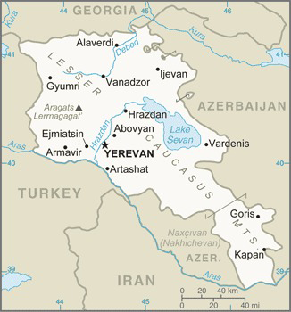

Armenia is a country with ancient history and rich culture. In fact, it is one of the oldest countries in the world. Scientific research, numerous archaeological findings and old manuscripts prove that the Armenian Highlands are the very Cradle of Civilization. Armenia prides itself as being the first nation to adopt Christianity early in the 4th century. Armenia came under various empires throughout the centuries including Roman, Byzantine, Arab, Persian, and Ottoman.
Christianity has played an immensely important role in the shaping of the Armenian people for over 1,700 years. Religion has been an essential part of Armenian identity and has reshaped the course of history.
During World War I, the western portion of Armenia was forcefully settled by the Ottoman Empire with harsh practices resulting in over 1 million Armenian deaths (Armenian Genocide).
Armenia was under Soviet rule from 1922 until 1991. At that time, Armenia became an independent republic.
Transnational Issues
The Armenian Genocide (also sometimes known as the Armenian Holocaust) was the systematic mass murder and expulsion of 1.5 million ethnic Armenians carried out in Turkey and adjoining regions by the Ottoman government between 1914 and 1923. The starting date is conventionally held to be 24 April 1915, the day that Ottoman authorities rounded up, arrested, and deported from Constantinople (now Istanbul) to the region of Angora (Ankara), 235 to 270 Armenian intellectuals and community leaders, the majority of whom were eventually murdered. The genocide was carried out during and after World War I and implemented in two phases—the wholesale killing of the able-bodied male population through massacre and subjection of army conscripts to forced labour, followed by the deportation of women, children, the elderly, and the infirm on death marches leading to the Syrian Desert. Driven forward by military escorts, the deportees were deprived of food and water and subjected to periodic robbery, rape, and massacre. Most Armenian diaspora communities around the world came into being as a direct result of the genocide.
Turkey closed the common border with Armenia in 1993, further hindering economic growth in Armenia.
Armenia has an ongoing dispute with Azerbaijan over the Nagorno-Karabakh region.
Military & Security
The Armenian Armed Forces have approximately 42,000 active troops in army and 3,000 in air defense. Armenian Armed Forces: Ground Forces, Air Force and Air Defense; "Nagorno-Karabakh Republic": Nagorno-Karabakh Self-Defense Force (NKSDF) (2011) Military service age and obligation:
18-27 years of age for voluntary or compulsory military service; 2-year conscript service obligation; 17 year olds are eligible to become cadets at military higher education institutes, where they are classified as military personnel.
The Armed Forces of Armenia (Armenian: Հայաստանի զինված ուժեր) comprise two services: the Army, and the Air Force and Air Defense (a unified branch). Though it was partially formed out of the former Soviet Army forces stationed in the Armenian SSR (mostly units of the 7th Guards Army of the Transcaucasian Military District), the military of Armenia can be traced back to the founding of the First Republic of Armenia in 1918. Being a landlocked country, Armenia has no navy.
Geography

Armenian Map
Location
Armenia is located in Southwestern Asia between Turkey (to the west), Azerbaijan (east), Georgia (north), and a small shared border with Iran (south). Armenia is a landlocked nation in the lesser Caucasus Mountains. Lake Sevan is the largest lake in this mountain range.
Armenia has an astounding array of landscapes within its borders, including seven geographic zones, from deserts and semi-deserts to alpine and sub alpine meadows. The largely volcanic mountains and the tectonic activity has pushed Armenia up above the clouds, stimulating the true range of the four seasons; hot and sunny summers, cold and icy winters, and the beautiful flora of spring and fall. The falls in Armenia are absolutely astounding, lasting longer than the spring season and opening up to people unforgettable landscapes. Whether it’s skiing during winter, celebrating festivals in spring, paragliding throughout summer or enjoying the Armenian wildlife in autumn, there’s always something for everyone to do in Armenia.
Environment
Armenia has highland continental weather with hot summers and cold winters.The highest point in Armenia is the Aragats mountain that is located 4,090 metres above the sea level. Aragats is also the highest point of the Lesser Caucasus. The longest river in Armenia is river Araks, the length of which on the territory of Armenia is 158 km. However, the full length of the river is 1,072 km as it flows through Turkey, Armenia, Azerbaijan and Iran.
A broad public discussion of environmental problems began in the mid-1980s, when the first "green" groups formed in opposition to Yerevan's intense industrial air pollution and to nuclear power generation in the wake of the 1986 reactor explosion at Chernobyl'. Environmental issues helped form the basis of the nationalist independence movement when environmental demonstrations subsequently merged with those for other political causes in the late 1980s. By 1980 the infrequency of sightings of Mount Ararat, which looms about sixty kilometers across the closed Turkish border, became a symbol of worsening air pollution in Yerevan.
Armenia is trying to address its environmental problems. It has established a Ministry of Environment and introduced taxes for air and water pollution and solid waste disposal, whose revenues are used for environmental protection activities. Armenia is interested in cooperating with members of the international community on environmental issues. Armenian Government is working toward closing the Armenian Nuclear Power Plant as soon as alternative energy sources are identified.
Terrain
Armenia is comprised of highlands with mountains. Agricultural land exceeds 2.1 million hectactes throughout the country. There is very little forest area, but there are fast flowing rivers and good soil. Agriculture is carried out on farmland owned by the private sector. Armenia has cultivated fields, orchards, and vineyards. Principal agriculture are grains (mostly wheat and barley), potatoes, various vegetables, grapes (wine), and fruit (cherries, apples, figs, pomegranates, apricots, and olives). Armenia's weather and land is conducive to wine making, and the country boasts wineries across the various regions.
People & Society
Population
As of July 2020, Armenia's population was 3,021,324. Armenian Apostolic is the religion practiced by most people (92.6%). This branch of the Orthodox Church has derived its faith directly from the apostles, Thaddeus and Bartholomew, who preached in Armenia during the first century. The Christian faith has shaped the Armenian culture so intimately that it permeates the very landscape of the country, with khachkars (cross stone carvings) strewn across even the most remote valleys, and ancient monasteries nestled on the peaks of mountains surrounded by breathtaking nature.
The Armenian diaspora refers to the communities of Armenians outside Armenia and other locations where Armenians are considered an indigenous population. Since antiquity, Armenians have established communities in many regions throughout the world. However, the modern Armenian diaspora was largely formed as a result of World War I, when the Armenian Genocide ordered by the Ottoman Empire forced the people living in their homeland to flee or be killed.
Languages
The Armenian language is an Indo-European language that is the only language in the Armenian branch. It is the official language of Armenia as well as the de facto Republic of Artsakh. Historically being spoken throughout the Armenian Highlands, today, Armenian is widely spoken throughout the Armenian diaspora. Armenian is written in its own writing system, the Armenian alphabet, introduced in 405 AD by the priest Mesrop Mashtots. Today, Armenian is the official language. Russian is also widely spoken. The Armenian language is an Indo-European language that is the only language in the Armenian branch. It is the official language of Armenia as well as the de facto Republic of Artsakh. Historically being spoken throughout the Armenian Highlands, today, Armenian is widely spoken throughout the Armenian diaspora. Armenian is written in its own writing system, the Armenian alphabet, introduced in 405 AD by the priest Mesrop Mashtots.
Distribution
Most of the population is located in the northern half of the country. The capital of Yerevan is the most populous city. The Armenian Dram is the official currency throughout the country.